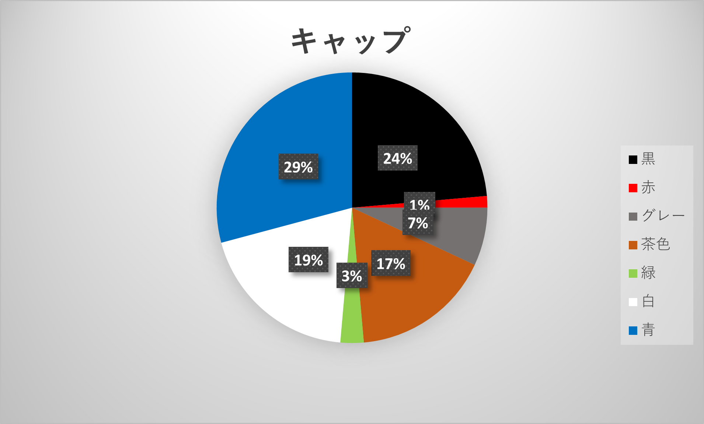
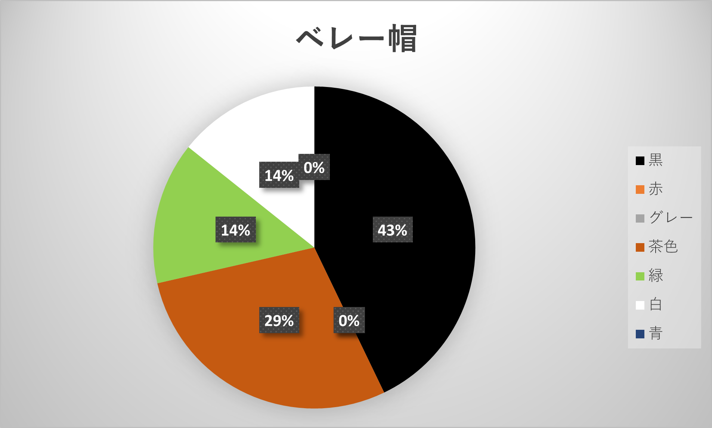
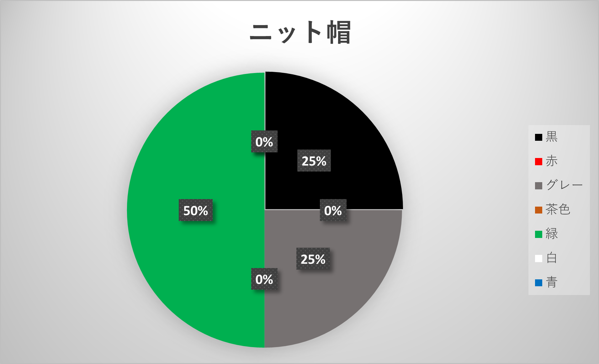
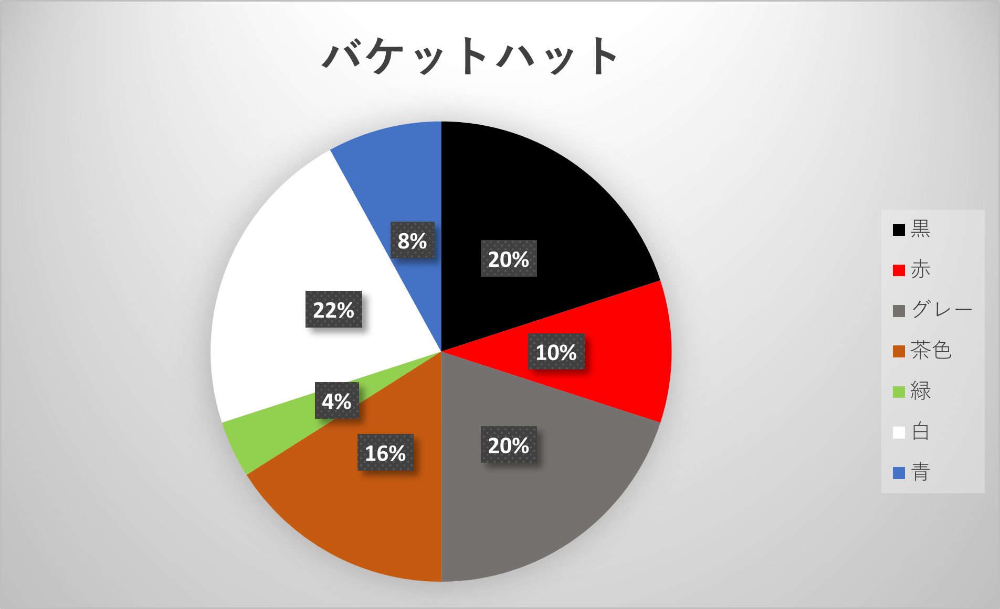
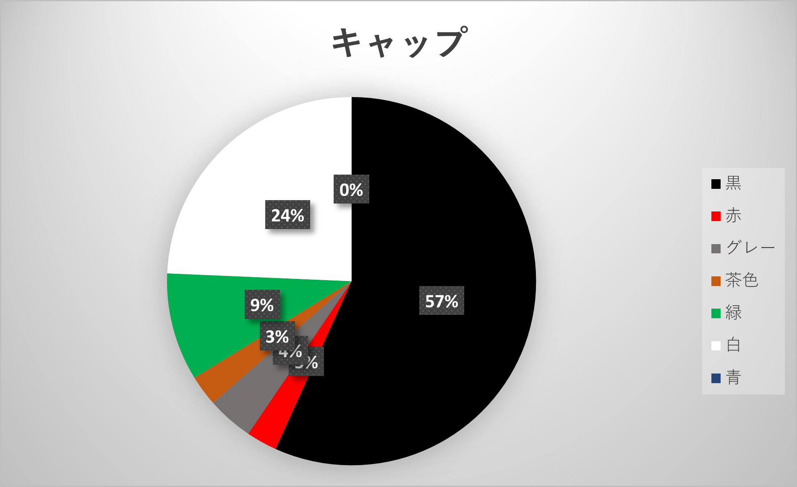
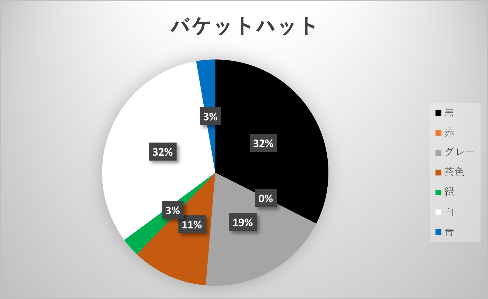

調査概要
私たち3班は帽子について観察しました。帽子については色と種類について調べました。
場所は桜木町の駅前で止まって観察し、桜木町の動く歩道では歩いて観察しました
調査の日にちと時間は2023年10月17日の14時から14時40分で行いました。
調査結果
桜木町での止まっての観察は
キャップ→72
ベレー帽→14
ニット棒→４
バケットハット→50
合計で140で調査しました。
グラフで表すとこのような結果になりました。




次に動く歩道で観察しました。
キャップ→74
バケットハット→37
合計は111で調査しました。
グラフで表すとこのような結果になりました。


結果からの考察
今回の調査から黒のキャップを多くの人々がかぶっていることがわかりました。
この理由として私は黒色のキャップはどんな服にも合わせやすいということがわかりました。
また、帽子のかぶっている世代や性別ととして高齢者の男性の方が多いと感じました。
最後に個人的な予想で帽子をかぶる人は少ないと思っていましたが、季節が少しずつ寒くなってきているので
多くの人々が帽子をかぶっっていると感じました。